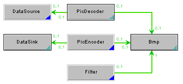
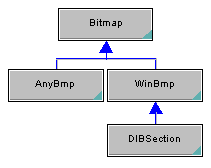
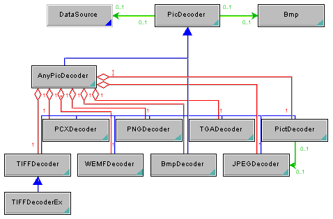
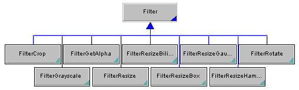

|
|
|
|
This page provides an overview of the internal design of paintlib. It is mainly intended for people who want to extend or change the library, for instance by adding custom bitmap classes, new de- or encoders, custom data sources or filter classes. At the right is an UML class diagram describing how the main components of paintlib interact. If you're planning on contributing the code you're writing, please also read the feedback section for things like cvs access etc. The Bitmap Classes You can derive custom bitmap classes from PLBmp to define your own storage format for bitmap data. If you're porting paintlib to a different OS, it makes sense to define a new bitmap class which stores data in a format that is native to the OS. There are several pure virtual functions in CBmp which must be defined in a derived class. In addition, there are member variables which must be set correctly. Member pointers must always point to a valid memory location or be NULL. To change the byte ordering within a 32-bit Pixel, you need to change the PL_RGBA_RED, PL_RGBA_GREEN, PL_RGBA_BLUE, and PL_RGBA_ALPHA constants. See the CBmp reference for more information on these constants. Bitmap creation is a two-step process. The first step is the constructor call, and the second step is the call to Create() or the assignment operator. During construction, a derived class creates a small empty bitmap. (This can't be done in the base class because calling virtual functions in a constructor is not allowed. Ask why in comp.lang.c++.moderated and you'll get a lot of good answers ;-). During Create(), the object is initialized to contain a bitmap of a specified size. This two-step process was necessary for older compilers because constructors had no simple way of signalling failure - for instance due to low memory conditions - to the calling program. More importantly, it also makes it possible to call Create() without knowing to which subclass of PLBmp the bitmap actually belongs. Create() and CreateCopy() are implemented in PLBmp itself and call several pure virtual functions that must be implemented:
void PLXxxBmp::internalCreate
( LONG Width,
LONG Height,
WORD BitsPerPixel,
BOOL bAlphaChannel
)
Create an empty bitmap with allocated but uninitialized bits (m_pBits). If necessary, this function also needs to allocate a color table (m_pClrTab). m_pClrTab must be NULL if no color table is allocated. It must call the base class method initLocals() to initialize the member variables. The routine can assume that no memory for members is allocated before it is called.
void PLXxxBmp::initLineArray
()
Allocate and initialize the array of pointers to lines (m_pLineArray). This array contains one pointer per line in the bitmap and is returned by GetLineArray().
void PLXxxBmp::freeMembers
()
Free all memory allocated. You should also set the pointers to the memory regions to NULL. In addition, two public functions must be implemented:
long PLXxxBmp::GetMemUsed
()
Return the total amount of memory used by the object in bytes.
long PLXxxBmp::GetBytesPerLine
()
Return the number of bytes needed per line, including pad bytes if necessary. Bitmap classes also need a copy constructor and an assignment operator. These should be able to copy bitmaps of one class to bitmaps of another class (this can be handy, for instance, if you want to move a DIB to a DDraw surface: DDrawBmp = WinBmp; ).
Bitmap classes are meant to be used in a lot of different situations. Use ASSERT statements wherever you can to provide parameter validation.
Decoder Implementation To decode a file, 3 objects interact: The decoder, the bitmap object, and a data source. In these objects, the work is divided between the base class and a derived class in most cases. As an UML class diagram, the decoder looks like this:  The decoder base class PLPicDecoder handles trace levels and provides a standard interface for errors. It also provides routines which read 16- and 32- bit integers from the data source in the correct byte order. The main decoding routines MakeBmpFromFile and MakeBmp are in this class. They set up the data source and call DoDecode(), a method which is implemented in each derived class. Most derived classes are decoders for a specific file format. The exception is CAnyPicDecoder, which will be explained later. The DoDecode()-routines handle the actual decoding of the data. In the case of PLPNGDecoder, PLTIFFDecoder, PLGIFDecoder and PLJPEGDecoder, they just call the appropriate routines in the other libraries. In other format-specific decoder classes, the work is done in the class itself, calling base class routines when necessary. The data is placed into the bitmap by calling GetLineArray() and directly writing the lines into the memory regions returned. PLAnyPicDecoder creates a format-specific decoder of each known type on construction. DoDecode() is not implemented in this class. Instead, MakeBmp() is overridden. It auto-detects the file type and calls the MakeBmp() method of the decoder for the file format. If you wish to implement your own decoder, you can use PLTGADecoder as a model. TGA is a simple file format and the code is easy to read. To add auto-detection, you need to add a new decoder member to PLAnyPicDecoder and modify the autodetection code in this class. You also need to handle errors like the existing decoders do (via PLPicDecoder::raiseError()). In particular, if you're interfacing to an existing third-party decoder, you will probably need to handle their errors and call raiseError() whenever the decoder signals an error. Custom Data Sources The base class CDataSource handles data which is already in memory. PLFileSource simply opens a file and makes it available as a memory block. If memory-mapped files are available, a mapping is created. If not, all data is read into memory on open. PLResourceSource does the same for windows resources. A new data source class needs to read the data into memory on open and free the memory when Close() is called. Encoder Implementation The encoders mirror the decoders... Filter Implementation Filters are very simple wrappers around the actual bitmap manipulation functions. To implement a new filter, you need to derive a class from PLFilter, implement a constructor that takes the filters' parameters and override either the Apply() or the ApplyInPlace() function. You can choose which one to implement based on efficiency considerations since the base class implementation will make sure the other one works anyway. Have a look at PLFilterCrop for a simple implementation (or PLFilterFillRect for a cool template-based implementation ;-)).  Future Directions Of course, a lot of paintlib's expansion will use the basic framework outlined above: People will build filters, en- and decoders and data sources/sinks. In addition, there are two refactorings that we can hopefully pull off for version 3. The major one is the addition of pixel classes and templatized bitmap classes. Although that will break backwards compatibility in some places, there is a lot of more-or-less duplicated code that could be thrown away if we had pixel classes. They are also nessesary to support more than the two pixel formats that we currently have (8 and 32 bpp). The second one is that there are still several methods in PLBmp that would be better off in separate filters. If you're thinking of contributing to paintlib, try to make contributions that fit into this general direction. For instance, don't add manipulation functions directly to PLBmp. Write a filter class. Coding Conventions Prefix pointers with p and member variables with m_. Indentation width is 2. Public member functions are uppercase, protected and private ones are lowercase. Braces are on separate lines. Names in the global namespace - classes, defines etc. - begin with PL. File names are all lowercase and have the prefix pl.
|
|